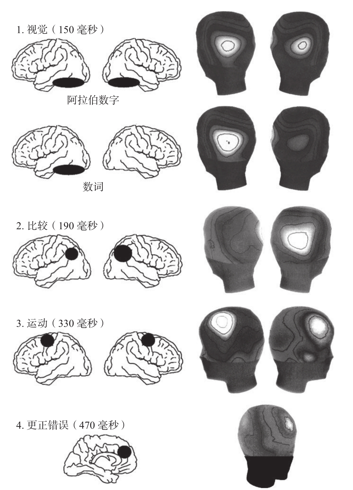
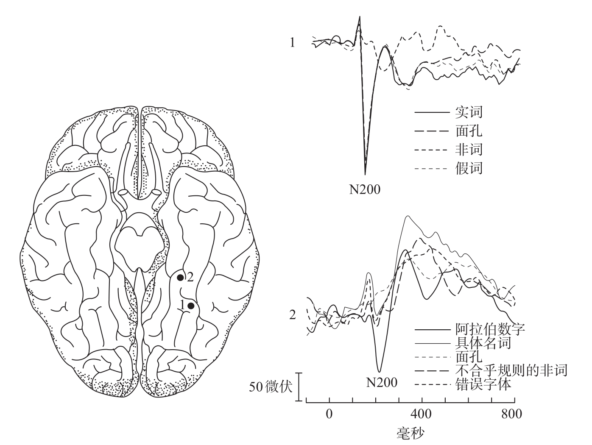

我们当中随便一个人都可以在4/10秒的时间内判断一个特定的数字是大于还是小于5，但是这时长对应于一整套加工过程的总时程，从对目标数字进行视觉识别到动作反应。这个过程是否能够被分解为一些较小的步骤？最终我们发现，脑电图是一种较理想的工具，它能以毫秒级的精确度测量大脑在判断出4小于5时所用的时间。
下面是我最近做的一个实验。我会在计算机屏幕上快速地呈现阿拉伯数字或数词11，要求参与实验的志愿者在数字小于5时按一个指定的键，在数字大于5时按另一个指定的按键。在此过程中，覆盖整个头皮的64导电极被用来记录事件相关电位，有专门的软件对多种实验条件下头皮表面电位的发展变化进行逐帧的重构（见图8-5）。

记录皮层活动所引起的头皮电压的微小变化（脑电图），能够重构出数字比较时皮层激活的时间顺序。在这个实验中，志愿者通过使用左手或右手尽可能快地按键来回答他们看到的数字是大于5还是小于5。我们已经能够确定4个加工阶段：1.对靶刺激（阿拉伯数字和数词）的视觉识别；2.对相应数量的表征以及和记忆中的参照标准进行比较；3.手动反应的编程和执行；4.对偶尔出现的错误进行更正。
图8-5 比较数字大小时皮层激活的时间顺序
资料来源：改编自Dehaene, 1996。
重构的时间进程开始于数字呈现在被试眼前的那一瞬间。在最初几十毫秒，电位几乎始终保持为0。在大约100毫秒的时候，一个被称为P1的正电位出现在头皮的后部，它反映了位于枕叶的视觉区域的激活。这个阶段仅涉及低水平的视觉加工，被试还没有知觉到阿拉伯数字和数词之间的区别。然而在100到150毫秒之间，两种任务突然开始出现分离：“four”这样的数词产生了一个几乎完全单侧集中于大脑左半球的负电位，而“4”这样的阿拉伯数字产生了双侧的电位。正如我们从裂脑患者的案例中推论出的结果：阿拉伯数字的视觉识别需要两个大脑半球的同时参与，而识别数词仅需要左半球参与。
数词和阿拉伯数字在头皮后部左侧引发的事件相关电位，看起来几乎完全相同。然而更精确的记录显示，数词和阿拉伯数字在大脑左半球引发的电位可能来自相邻而并非相同的脑区。对于一些癫痫病患者，为了避免颅骨引起的电信号的变形，神经外科医生会将一套电极直接插入皮层表面，以提高脑电信号的空间定位精确度。耶鲁大学的特鲁特·阿利森（Truett Allison）、格里高利·麦卡锡（Gregory McCarthy）及同事把这种技术运用于精确地记录腹侧枕颞区域对不同范畴的视觉刺激（如单词、数字、物品的图片和面孔的图片）的反应12。他们的实验结果证明，对不同范畴的视觉刺激进行加工的脑机制具有极度特异性的特征。在某些情况下，一个电极仅在对单词进行加工时探测到电信号，一个与其相隔1毫米远的电极只对阿拉伯数字有反应（见图8-6），另一个仅对面孔有反应。这些在不到200毫秒的时间内出现的高度特异性的反应表明：按照能够引发激活的刺激类型进行分类，各个类别的视觉检测器分散地位于视皮层底部表面。

颅内电极揭示，腹侧颞枕区域在对不同范畴的刺激进行视觉识别时表现出良好的特异性。位置1的皮层282对字母串（无论它是不是一个有意义的单词）有反应，而对面孔没有反应。相邻的位置2的电极只有在阿拉伯数字出现的时候才产生电位，而不对面孔或是字母串产生反应。
图8-6 不同范畴的视觉刺激引发不同的位置被激活
资料来源：Allison et al., 1994，版权所有©1994 by Oxford University Press。
就这样，在150毫秒的时候，特化的视觉区中的一部分神经元识别出了数字符号的形状，然而这时大脑并没有理解它们的意义。大约到了190毫秒时，出现了第一个数量编码的迹象：分布在前额叶皮层的电极突然表现出了距离效应。那些距离5比较近，因此也较难进行比较的数字，引发了比远离5的数字更大的振幅。这种效应在大脑左右两个半球均有发现，但是右半球表现更明显。因此，只需要190毫秒，位于大脑两个半球下顶叶区域的“数感网络”已经得到了激活。细节分析表明，阿拉伯数字和数词的电位距离效应表现出了相似的脑区激活模式。这一结果证实了下顶叶区域与数字所呈现的形式无关，只涉及它们抽象量的大小。
随着时间的发展，接下来到达了对运动反应进行编码的阶段。位于前运动和运动脑区的电极所记录到的电压在大脑两个半球上表现出非常明显的差别。当被试准备用右手做出反应时，位于左半球的电极会出现一个负电位；与此相反，当被试准备用左手做出反应时，头皮的右侧出现负电位（要牢记左侧运动皮层控制身体右侧的动作，反之亦然）。这种单侧的准备状态电位最早出现于屏幕上呈现数字之后的250毫秒时，在330毫秒的时候达到顶峰。截至这个时候，对数字进行比较的加工过程已经完成，因为大脑已经得到了“大还是小”的答案。基于上述过程，通过视觉识别数字的形状并获取它的数量大小信息需要1/4到1/3秒的时间。
平均而言，被试的反应发生在400毫秒左右，在肌肉收缩和实际执行所选反应的延时之后。我们继续分析了这个时间点之后的过程。实际上，在运动反应之后，会发生一个非常有趣的电位事件。要知道哪怕在数字比较这样初级的任务中，我们也偶尔会犯错误。大多数错误是由于对反应有错误预期，它们很快会被察觉并被更正。事件相关电位揭示了这种更正产生的源头13。在错误产生之后极短的时间内，位于头的前部的电极突然迸发出一个强度非常大的负电位信号，正确的反应之后没有这样的信号。因此，人脑的这个活动肯定反映了对错误的察觉和试图更正。它出现的位置表明该信号可能来源于前扣带回皮层内部，这个脑区负责对动作的注意控制和抑制不必要的动作。这种反应出现得非常迅速，几乎是在按了错误按键之后70毫秒内，因此不可能是来自感觉器官的反馈。另外，我的实验也没有提供按键反应正确与否的反馈。每当被试察觉到他们正在进行的行为与他们意图做出的反应不相符时，前扣带回会得到内源性的激活。
我再次强调一下刚刚描述过的所有加工过程——数字识别、数量信息的获取、比较大小、选定反应、动作的执行，以及对潜在错误的探测，它们均发生在半秒之内。信息以惊人的速度在脑区之间进行传递。迄今为止，也只有脑电图和脑磁图能够实现对这种变化进行尽可能实时的追踪。